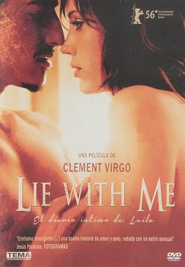

与我同眠 / Lie with Me
又名：与我上床 / 爱我别走 / 伴我同性
作品信息
| 导演 | 克莱门·维果 |
| 编剧 | Tamara Berger / 克莱门·维果 / Carrie Paupst Shaughnessy |
| 主演 | 劳伦·李·史密斯 / 艾里克·巴弗尔 / 波莉·香农 / 梅寇·阮 / Michael Facciolo / 凯特·林奇 / Ron White / 克里斯汀·莱曼 / 唐·弗朗克斯 / 里查德·切沃劳 / Frank Chiesurin / Nicola Lipman / Theresa Tova |
| 类型 | 剧情 / 爱情 / 情色 |
| 制片国家/地区 | 加拿大 |
| 语言 | 英语 / 西班牙语 |
| 上映日期 | 2005-09-10(多伦多电影节) |
| 片长 | 93分钟 |
| IMDb | tt0418832 |
最后一次看到是 2026-08-12T21:13:11+08:00 · 豆瓣原页